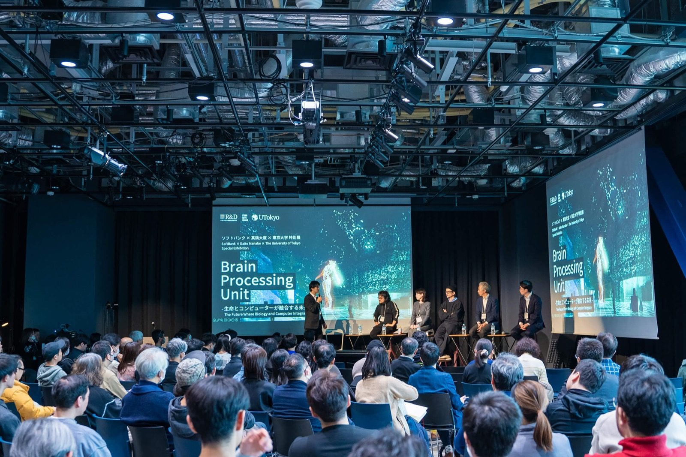
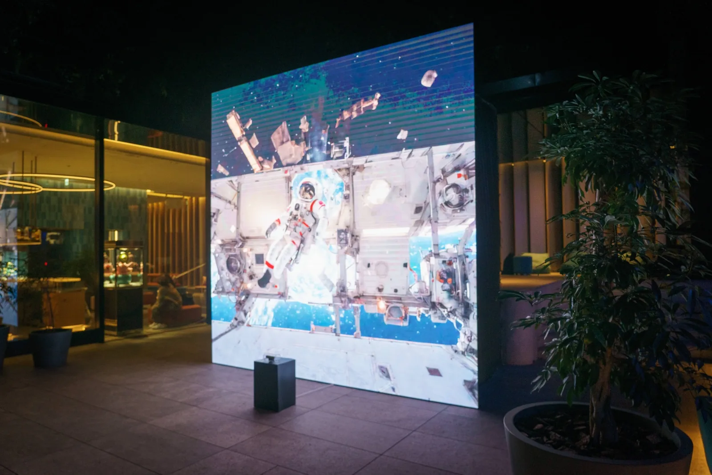
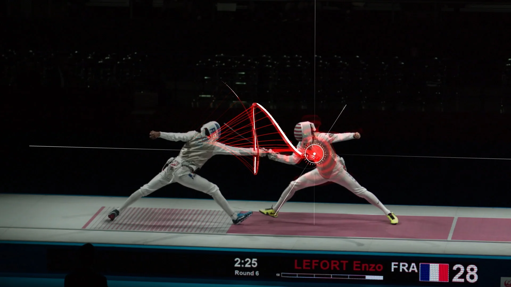
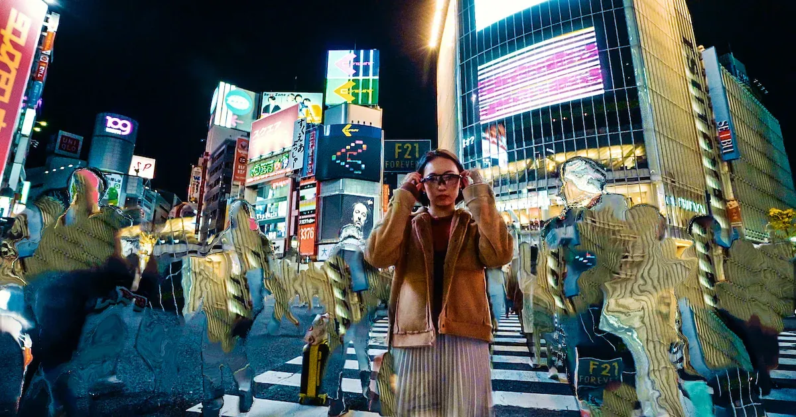

真锅大度 · Daito Manabe · Research Archive
Signal
Grid从身体反馈到生命—机器社会
Archive boundary / 档案边界
截至 2026-07-27，从官方网站与机构来源选取 21 个代表项目，跨度 2004–2025。该研究样本不宣称为作品全集或 catalogue raisonné。
ALL / 21
BODY / 04
TRACKING / 05
AI / 06
BIOLOGICAL / 01
GRID VIEW
LIST VIEW
01
SENSE / 感知02
MEASURE / 测量03
MODEL / 建模04
ACT / 执行05
FEEDBACK / 反馈
2025 / Research exhibition
ID 021
Brain Processing Unit
脑处理单元——生物与计算机融合的未来神经回路接受刺激并通过电极阵列测量活动；作品把脑类器官反应连接到音乐识别、机器人控制与生命节律研究。
Source: daito.ws/projects/brain-processing-unit/ · Credit: SoftBank × Daito Manabe × The University of Tokyo · Rights: needs review

2023 / Interactive installation
Transformirror
变形镜Studio Daito Manabe archive; photographer not stated · Rights: needs review

2012–2019 / Research system
Fencing Tracking
击剑追踪与可视化系统Rhizomatiks Research / Studio Daito Manabe · Rights: needs review

2020 / Music video
Terminal Slam
机器视觉如何重写城市表面Squarepusher / Warp Records; Rhizomatiks work record · Rights: needs review
2004riot please
触觉 / 听觉
触觉 / 听觉
2008electric stimulus
身体接口
身体接口
2012Fencing
追踪系统
追踪系统
201524 drones
群体编舞
群体编舞
2018morphecore
脑解码
脑解码
2021TOKYO 2020–2021
生成社会文本
生成社会文本
2023Transformirror
实时扩散
实时扩散
2025Brain Processing Unit
生物计算
生物计算